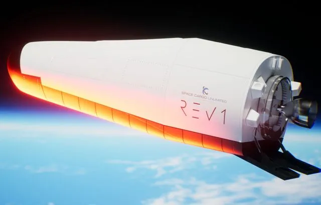

Espace : La start-up Space Cargo Unlimited dévoile un véhicule spatial, future « usine flottante »

Une véritable petite usine spatiale. La start-up franco-luxembourgeoise Space Cargo Unlimited, dirigée par le Bordelais Nicolas Gaume, présente, ce jeudi, son nouveau projet, REV1, « une plate-forme autonome permettant aux entreprises de produire dans l’espace. » L’objectif est de rendre ce véhicule opérationnel pour 2025.
« Ce véhicule spatial de moins de trois tonnes sera réutilisable vingt fois et restera en orbite basse, à quelques centaines de kilomètres d’altitude, pendant deux à trois mois pour chaque mission » a annoncé la start-up. Le contrat pour la fabrication de REV1, véhicule autonome et sans astronaute à bord, a été confié à Thales Alenia Space (TAS), spécialiste des modules pressurisés, a annoncé la start-up.
« L’exploration spatiale est en pleine voie de démocratisation »L’ambition de REV 1 est de permettre à des industriels de produire dans l’espace, et donc de profiter de l’absence de gravité, dans des domaines aussi variés que la biotechnologie, l’agriculture, la pharmacologie, les nouveaux matériaux.« L’exploration spatiale est en pleine voie de démocratisation, assure l’entreprise. Les activités croissantes de recherche et développement sont rendues possibles grâce aux lanceurs réutilisables. Morgan Stanley estime que la fabrication dans l’espace représentera un marché de 10 milliards de dollars d’ici 2040. Nous pensons que le marché pourrait être jusqu’à deux fois plus important dès 2035. »
27/10/22 à 11h59